Overview
FRACTURE OF THE FEMUR (BONE INSIDE THE THIGH)
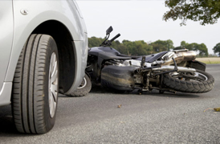
How Would This Bone Break ?
Fracture of the femur occurs after high energy trauma in the young adults. This is commonly seen after motor bike accidents in Sri Lanka. The bone can break easily in the elderly after simple fall. Bone injury may damage other tissues around femur at the time of injury. Major blood vessel injury and nerve injury are very important out of these and muscle injury usually recovers without a significant disability.
How Was It Treated In The Past?
Older days when a proper orthopaedic service and fracture fixation methods were not well developed, the patients with broken femur were treated without operation. The patients were kept bedbound for three months. The legs were fixed to a metal frame and most often had a weight attached to the foot. Fractures healed with this method with the expense of shortening of the limb and various deformities. Some fracture did not heal at all. This method is somewhat similar to the indigenous way of fracture care in Sri Lanka. It will take about four to five months before someone walks again.
Are We Still The Same ?
NO. Not Anymore. Fortunately, fracture of the shaft of femur treatment has evolved so much that the fracture can be fixed under ONE hour. Patient could start walking as early as next day with a help of a walking frame or pair of crutches
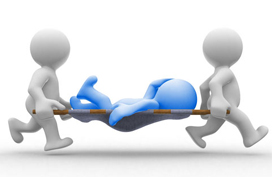
Why Should This Fracture Fixed Without Delay?
We want you to be up and about immediately after your injury. Next point is we want you to be back in your normal level of activities and get back to your job as early as possible. Why should you waste time when already a very good treatment option is available?
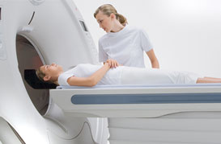
Will I Be Subjected To More Tests?
You will only need plain Xrays for this. However your blood will be checked as required

Is It A Big Operation?
It is a major operation but done in a smaller way. Most of the time, it can be done with a cut (3-4 inches) at outer side of your buttock area. In difficult cases there may be an additional cut at outer mid-thigh area
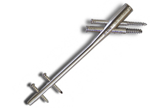
What Is Used To Fix This Fracture?
The latest modern way of fixation with an intramedullary locking nail (This a metal tube sent inside the canal of the thigh bone)
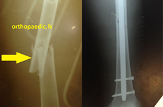
Example Case Before Fixation
After fixation with an interlocking nail
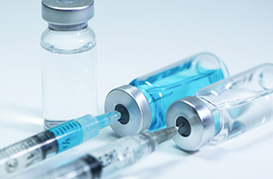
What Type Of Anaesthesia Is Used For This Operation?
It is done under a spinal anaesthesia that numbs your waist and below.
How Long Should I Be In The Hospital?
It is usually a two-three night stay.
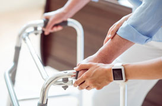
When Can I Walk?
With simple breaks of the shaft, you could be walking very next day with help of a walking frame. There may be a little delay to walk if you have a complex fracture
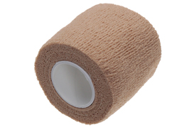
When Is The Wound Check After Discharge?
Your wound needs checking in a week and then at two weeks. Sutures, clips are taken out at this time approximately.

How Long Will It Take The Fracture To Heal?
It is around 8-10 weeks. It heals without any limb shortening or deformity.
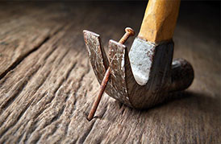
Will The Nail Need Removal?
Well, usually not unless indicated to do so. It can be kept life long without a problem. We will leave it in place minimum of 18 months before removal.
Will I Be Able To Walk Through Body Scanners?
This is very common question. Do not worry. It will not be a problem.

FEMUR FRACTURES NEAR THE KNEE JOINT
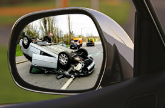
s It A Common Serious Injury?
Injuries to this area of bone are commonly seen individuals of 20-45 age following motor vehicle accidents.
The bone above the knee joint ill break into pieces depending on the amount of force your leg is subjected to.
The muscles covering the particular part of the bone, nearby blood vessels and nerves will also be subjected to similar force so that they get contused, crushed or lacerated.
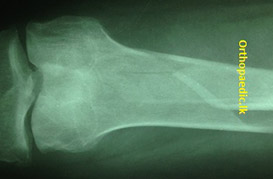
How Severe Would Be The Injury To Bone?
The bone may break into to two pieces or many fragments. In many occasions the fracture runs through the knee joint. This will disrupt the structure of the knee
What Is Done In The Hospital
This is serious form of injury. You will be thoroughly assessed. Your limb will be similarly assessed in order to see associated injuries.
What Tests Are Done
X-ray and a CT Scan will be done usually. Damage to the blood vessel will need additional investigations and surgical interventions.
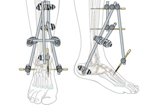
What Treatments Are Given And In What Time Frames?
If the injury is severe, you will not be subjected to immediate definitive surgery. Your leg will be fixed to an externally placed metal frame (External fixator) until the skin, muscles and other tissues recover or till the limb is ready for an operation. This could take up to 1-2 weeks.
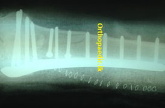
What Is The Definitive Treatment
There are many ways of fixing a fracture in this part of the bone. It may be done with a plate and screws or a nail sent through the canal of the bone. There are specially designed metal plates to fix fractures around the knee joint. External fixator alone will be the definitive mode of treatment in certain cases. An important aspect of the surgery is to reconstruct the knee joint.
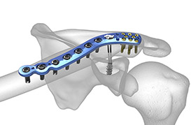
How Long Will Be The Hospital Stay ?
In fact, The time, you have to wait before the operation may be longer. However after the operation you may be discharged in 2-3 days.
How Long Does It Take To Heal
In fact, The time, you have to wait before the operation may be longer. However after the operation you may be discharged in 2-3 days.

When Can I Walk?
You are supposed to walk with a walking aid with non-partial weight bearing until you are advised to go on full weight-bearing
What Is The Average Healing Time?
The fracture will take about 8-10 weeks to heal in regular case. The time might vary on severity of the initial injury.

Know Problems With This Injury?
There are few known complications after the injury /surgery to this area.
Knee stiffness is a common issue. However with physiotherapy near normal function of the affected knee can be achieved though it is slow to come by.
If the fracture involves the surface of the knee joint, arthritis may develop in time to come.
In complex fractures, time taken to heal will delay and implant failures may occur. Additional procedures may be needed if unforeseen complications arise.
Alternative Treatment Options?
if you have this injury, unfortunately there is no other way out. surgical fixation is the only way of minimizing problems like; short leg, angled deformed leg.